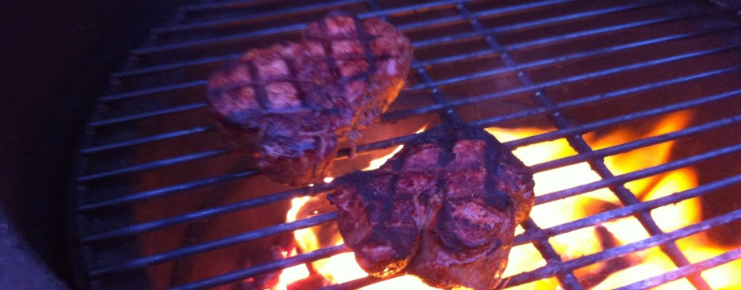

My Neighborhood!
Here's a list of some of fun things to do and places to eat in Provo and Orem Utah!
The Velour Live Music Gallery

The Velour Live Music Gallery is a great place to go for live music from up and coming local bands. Many great bands have gotten their start here or played here, including Imagine Dragons, Neon Trees, The Aces and more!
Provo Canyon

Provo Canyon is a great place to enjoy nature, as well as do many outdoor activities such as white water rafting, rock climbing, mountain biking, and skiing! A few of the parks there inclue
Sundance Resort Big Springs ParkCanyon Glen Park
University Mall

University Mall is a fun destination to shop, grab food, and socialize, and also includes a playplace for the kids to have fun!
Food!
Asado Argentine Restaurant

Argentine food is in my (slightly biased) opinion, the best in the world, and Asado makes it well! Asado isn't the cheapest food in Orem, but for authentic Argentine food, you can't go wrong eating here!
Sushi Ya

Sushi Ya is a great all you can eat sushi Restaurant in Orem, with some really good sushi! It also has a great atmosphere!